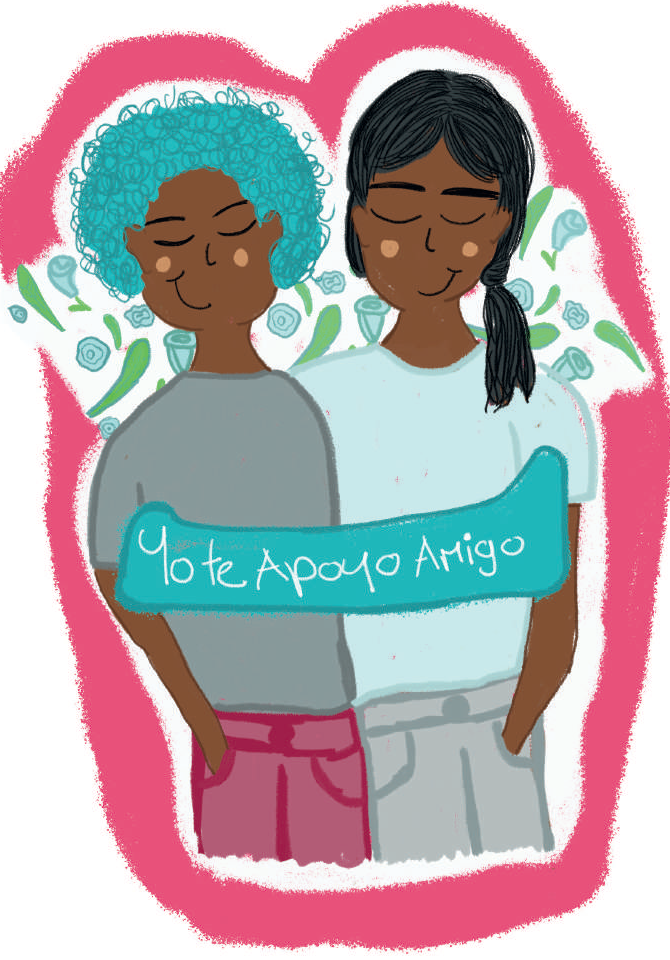

Autocuidado colectivo:
Estas categorías demuestran que la toma de responsabilidad por la salud es una labor que surge desde lo individual, pero que involucra a medida que se profundiza en compartir en colectivo. Lo habitual es que siempre existan aspectos que se deben cambiar en el entorno para lograr esfuerzos sostenibles y un verdadero ambiente saludable.